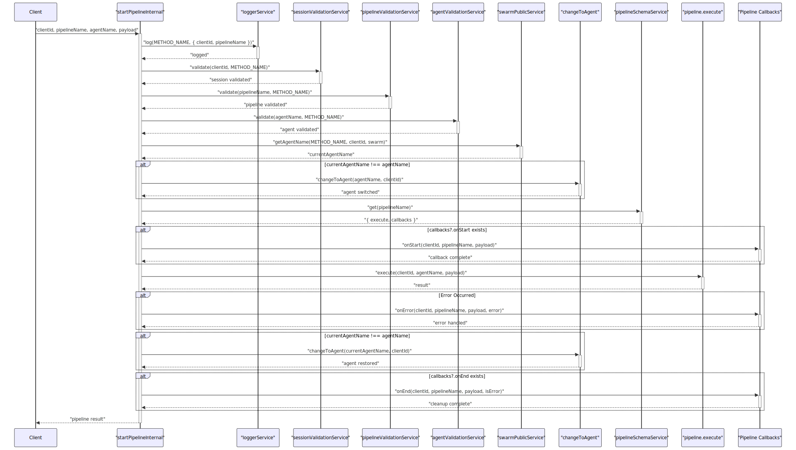

The Pipeline System provides structured workflow orchestration capabilities within the agent-swarm-kit framework. It enables the execution of predefined, repeatable procedures with specific agents, complete with lifecycle management, scope isolation, and callback handling.
This document covers pipeline definition, execution, schema management, and scope isolation. For information about agent navigation and switching, see Navigation System. For details about agent execution patterns, see Client Agent.
The Pipeline System consists of several key components that work together to provide structured workflow execution:

The pipeline execution process involves several stages, from validation to cleanup:

Pipelines are defined using the IPipelineSchema interface, which specifies the execution logic and optional lifecycle callbacks:
| Component | Type | Description |
|---|---|---|
pipelineName |
PipelineName |
Unique identifier for the pipeline |
execute |
Function |
Main execution logic taking clientId, agentName, and payload |
callbacks |
IPipelineCallbacks |
Optional lifecycle event handlers |
| Callback | Parameters | Purpose |
|---|---|---|
onStart |
clientId, pipelineName, payload |
Called before pipeline execution begins |
onEnd |
clientId, pipelineName, payload, isError |
Called after pipeline completes or fails |
onError |
clientId, pipelineName, payload, error |
Called when an error occurs during execution |
The pipeline system uses two primary services for schema management:

The validation service ensures pipeline uniqueness and existence:

The scope function provides schema context isolation, allowing temporary overrides of schema services during pipeline execution:

The Pipeline System integrates with several core framework components:
| Integration Point | Purpose | Implementation |
|---|---|---|
| Agent Navigation | Switch to specific agents for pipeline execution | changeToAgent() calls before and after execution |
| Session Management | Validate client sessions and maintain context | sessionValidationService.validate() |
| Agent Validation | Ensure target agents exist and are accessible | agentValidationService.validate() |
| Pipeline Validation | Ensure pipelines exist and are accessible | pipelineValidationService.validate() |
| Schema Management | Retrieve pipeline definitions and callbacks | pipelineSchemaService.get() |
| Context Management | Wrap execution in proper context scope | beginContext() wrapper |
| Logging System | Track pipeline execution and debugging | loggerService.log() throughout execution |
The Pipeline System integrates with three types of agent navigation:
| Navigation Function | Purpose | Usage Pattern |
|---|---|---|
changeToAgent(agentName, clientId) |
Switch to a specific agent | Used when pipeline requires execution on a specific agent |
changeToPrevAgent(clientId) |
Switch to previous agent in navigation stack | Used for returning to previous agent after pipeline completion |
changeToDefaultAgent(clientId) |
Switch to swarm's default agent | Used for resetting to default state |
All navigation functions use queued execution with memoization and circular route detection to prevent infinite loops.
The Pipeline System uses beginContext to ensure proper execution context isolation:

The Pipeline System provides a robust foundation for structured workflow execution within the agent-swarm-kit framework, with comprehensive lifecycle management, schema validation, and integration with the broader system architecture.